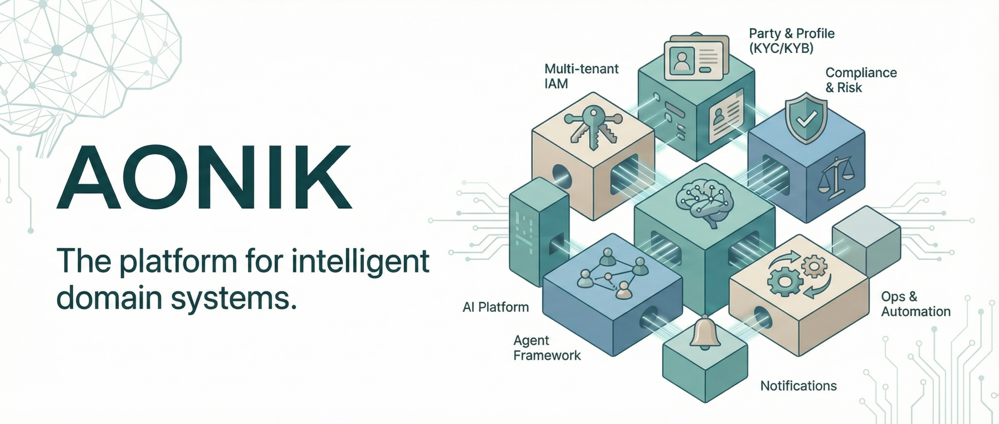

AONIK Documentation Index
This page combines the platform overview from the README with the documentation hub that used to live in `index.md`, so the docs folder has one polished entry point for both product context and developer navigation.
What is AONIK?#
AONIK is a modular AI intelligence platform designed to power intelligent systems, agents, and applications across multiple domains of human life.
It is not simply a fintech platform, a remittance application, or a personal finance tool. Those are application experiences that can be built on top of the platform. AONIK itself is the foundational intelligence substrate: the shared architecture, orchestration, memory, workflows, governance, and reasoning layer required to build AI-native systems that understand context, coordinate actions, and help people move forward with clarity and control.
The initial focus is finance because finance is structurally rich, operationally important, and deeply connected to everyday life. The long-term vision extends beyond finance into domains such as health, household coordination, education, wellbeing, productivity, and community systems.
AONIK enables intelligent systems, agents, and applications to reason, coordinate, and assist across multiple domains of life through shared orchestration, memory, governance, and trustworthy automation.
Platform model#
AONIK is structured into three layers.
| Layer | Role |
|---|---|
| AONIK Core | Domain-agnostic intelligence and orchestration substrate: identity, memory, workflows, governance, AI routing, agents, approvals, and shared human primitives. |
| Domain Modules | Specialised systems that own domain truth, operations, policies, workflows, and agents. Finance and Personal Finance are the first shipped modules. |
| Application Experiences | Curated end-user or operator experiences that package Core and one or more domain modules for a market, brand, or workflow. |
AONIK is modular by design. Each capability is a self-contained module with its own entities, services, endpoints, and persistence. Modules communicate through contracts and integration events, not direct coupling. New domains and application experiences plug in without collapsing into the core.
Platform core#
Identity and Access
Multi-tenant identity with users, roles, permissions, and tenant isolation.
Party and Profile
Unified party model for people and businesses, KYC/KYB scaffolding, and account linking.
Compliance and Risk
Screening checks, compliance cases, document management, and audit logging.
AI Platform
Multi-provider LLM routing, versioned prompts and tools, and recorded AI execution.
Vector Store
Semantic search over document embeddings for retrieval-augmented generation.
User Memory
Per-user memory for conversational context across sessions.
Agents reason, plan, and use tools, but they never directly mutate state. Mutating tools are approval-gated and the flow is: Agent calls mutating tool → gate → human or policy approves → tool executes.
Domain agents#
| Agent | Domain | Description |
|---|---|---|
| Finance | Billing, Ledger, Payments | Creates invoices, issues payments, queries ledger balances. |
| Personal Finance | Budgets, Goals, Accounts | Manages household budgets, savings goals, bill tracking, and spending insights. |
| Obligation Planning | Recurring obligations | Plans and optimises recurring financial obligations with structured output. |
| Spending Intelligence | Transaction analysis | Analyses spending patterns, categorisation, and anomaly detection. |
| Platform | Admin, Tenancy, Settings | Manages tenants, users, roles, platform configuration, and system operations. |
Finance module#
AONIK Finance provides the B2B / cross-border money plumbing: Ledger, Orders, Payments, Billing, Pricing, Partners, Catalog.
- Ledger — Double-entry, immutable. The source of financial truth.
- Payments — Payment intents, processing, payouts, refunds, chargebacks.
- Orders — Business intent hub; orders capture why money moves.
- Billing — Invoices, line items, allocations, customer accounts, dunning plans.
- Pricing — Fee policies, FX rate sources, spread policies, limits, quotes.
- Partners — Correspondent network with connectors, routing rules, payout schemas.
Personal finance#
The PersonalFinance module focuses on personal financial assistance: budgeting, subscriptions, bills, financial guidance, goals, household coordination, insights, planning, and financial wellbeing.
It is a sibling of Finance. Cross-module reads go through shared reader contracts rather than direct module references.
Future domain modules#
- AONIK Health — Wellness, nutrition, preventative guidance, health coaching, and healthcare coordination.
- AONIK Household — Shared planning, responsibilities, caregiving workflows, family coordination, and shared goals.
- AONIK Education — Learning plans, educational goals, tutoring workflows, and skill development.
- AONIK Productivity — Task coordination, personal operations, intelligent scheduling, and workflow orchestration.
Architecture#
AONIK is implemented as a module-first modular monolith. Each domain module owns its vertical slice with a module-scoped DbContext over a shared physical database.
src/ Aonik.SharedKernel/ Cross-cutting primitives, contracts, events Aonik.Platform/ Identity, tenancy, party/profile, compliance Aonik.Finance/ Ledger, payments, orders, billing, pricing, partners Aonik.PersonalFinance/ Households, transactions, bills, budgets, goals Aonik.Ai/ Model routing, prompts, memory, AI records Aonik.Agents/ Domain agents, orchestration, proposal workflows Aonik.Infrastructure/ EF migrations, external adapters, Qdrant, Quartz Aonik.Api/ HTTP API composition root Aonik.Worker/ Background jobs Aonik.Migrator/ Database migration host
Shared intelligence over isolated silos. Agents propose; systems execute. Every AI action is auditable. Risk tier determines autonomy. Ledger is the source of financial truth.
Getting started#
Prerequisites: .NET 10 SDK, SQL Server, Docker, Node.js, and Git.
git clone https://github.com/michaeljosiah/aonik.git cd aonik dotnet run --project src/Aonik.AppHost
This starts the API, Worker, Qdrant, and Admin UI. Aspire provisions SQL Server, starts Qdrant, configures connection strings, runs migrations, and seeds base data.
Technology#
| Layer | Stack |
|---|---|
| Runtime | .NET 10 |
| API | FastEndpoints |
| ORM | Entity Framework Core 10 |
| Database | SQL Server |
| Vector Store | Qdrant |
| AI / Agents | Microsoft Agent Framework, MCP, OpenAI |
| Orchestration | .NET Aspire |
| Testing | xUnit, FluentAssertions |
Documentation index#
Common tasks#
Build and test
# Build entire solution
Database ruleAlways generate EF Core migrations against AonikDbContext only. Never use module-scoped DbContexts for migration generation.
13Reference
Need help?#
- Check the Troubleshooting Guide
- Review the CHANGELOG for recent changes
- Consult AGENTS.md for coding patterns
14Reference
Contributing#
dotnet build Aonik.sln must succeed with 0 errorsdotnet test Aonik.sln must pass- Follow the standards in CLAUDE.md
- Update CHANGELOG.md with your changes
LicenseAONIK is source-available for non-commercial use under the AONIK Non-Commercial Source License. Commercial use requires a separate written commercial license.
Agents propose. Systems apply. Humans stay in control.